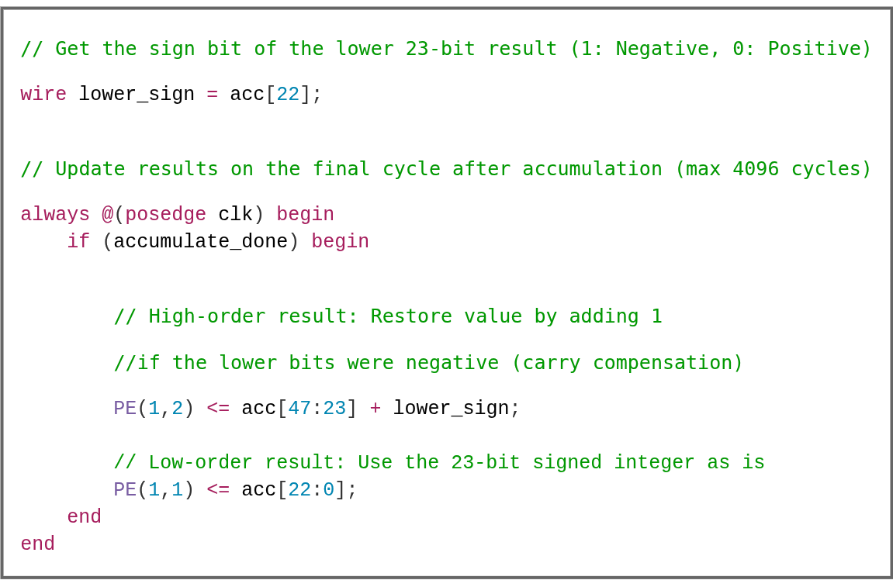

DSP48E2 W4A8 비트 패킹과 부호 복원#
pccx v002 는 1 개의 DSP48E2 슬라이스에서 2 개의 독립 MAC 연산 을 동시에 실행하기 위해, Port A 에 23-bit shift 듀얼 가중치 패킹 을 적용 합니다. 본 페이지는 해당 기법의 수학적 근거, 음수 처리 전략, 그리고 RTL 수준의 구현 방법을 정리합니다.
참고
본 기법은 GEMM 시스톨릭 어레이와 GEMV 코어 양쪽에서 공통으로 사용되며,
DSP48E2 의 정수형 연산 처리량을 이론상 2 배로 확장합니다. 비트 폭을
W5/W6 로 늘리려 하면 guard 영역이 부족해져 N_max 가 급격히 감소
하므로, W4A8 구성이 KV260 에서의 최적 균형점입니다.
1. 문제 정의#
DSP48E2 는 단일 27-bit × 18-bit 곱셈 + 48-bit 누적 을 제공합니다.
W4A8 양자화에서 가중치 W 는 4-bit, 액티베이션 A 는 8-bit 이므로 Port A 와 Port B 에 상당한 잉여 비트 공간 이 존재합니다. 이 잉여 공간을 활용해 하나의 DSP 로 두 개의 독립 MAC 를 수행하는 듀얼 채널 패킹을 적용합니다.
2. 비트 패킹 레이아웃#

Figure W4A8-Layout. Port A (27-bit) 는 상위 4-bit 에 W₁, 하위 4-bit
에 W₂ 를 배치하고 그 사이 19-bit 를 guard 로 비웁니다. Port B (18-bit)
는 상위 10-bit 를 A₁[7] 의 부호 확장으로, 하위 8-bit 에 액티베이션
A₁ 을 싣습니다.#
2.1 Port A — 듀얼 Weight (27-bit)#
비트 범위 |
내용 |
설명 |
|---|---|---|
|
W₁ (상위 채널) |
4-bit signed weight. MSB 가 부호와 일치하도록 |
|
Guard bits |
19-bit 빈 공간. 항상 |
|
W₂ (하위 채널) |
4-bit signed weight. |
2.2 Port B — 공유 Activation (18-bit)#
비트 범위 |
내용 |
설명 |
|---|---|---|
|
A₁ |
8-bit signed activation. |
|
Sign Extension Guard |
|
2.3 곱셈 결과의 비트 분리#
Port A 와 Port B 의 곱 결과는 다음과 같이 두 영역으로 자연히 분리됩니다.
상위 25-bit
acc[47:23]:W₁ · A₁이 누적.하위 23-bit
acc[22:0]:W₂ · A₁이 누적.
3. 안전 누적 한계#
하위 23-bit 공간에서 W₂ · A₁ 이 guard 영역을 침범하지 않고 누적
가능한 최대 사이클 수는 다음과 같이 유도됩니다.
(하위 결과의 부호 비트를 고려해 2²² 까지만 안전하게 사용)
하위에서 4,096 사이클까지 누적하는 동안 guard 영역이 상위 채널을 보호하며,
동일 논리로 상위 25-bit 에서도 W₁ · A₁ 이 안전하게 축적됩니다.
중요
K > 4,096 인 레이어는 타일 분할(K-split) 후 여러 누적 세션으로 처리 해야 합니다. 분할 단위는 드라이버/컴파일러 레벨에서 결정됩니다.
4. 음수 누적과 Borrow 현상#
하위 결과가 음수가 되면, 2 의 보수 하드웨어인 DSP48E2 는 48-bit 레지스터 내에서 sign extension 을 수행합니다. 이로 인해 상위 비트 영역에서 “1 을 빌려가는(borrow)” 현상 이 발생합니다.
4.1 수학적 분석#
하위 결과의 총합을 -X 라 하면, 48-bit 2 의 보수 표현 하에서:
이를 23-bit 경계에 맞춰 재구성하면:
따라서:
하위 23-bit
acc[22:0]:2²³ − X— 올바른 2 의 보수 음수값.상위 25-bit
acc[47:23]:(∑Uᵢ) − 1— 1 이 차감된 상태.
핵심 관찰
데이터는 손상되지 않습니다. 상위 비트의 감산은 sign extension 에 의한 수학적으로 정확한 borrow 이며, 단 1 사이클 후처리로 완벽 복원 가능합니다.
4.2 부호 복원 로직#
하위 결과의 부호는 acc[22] 단 1 비트로 판별됩니다.
acc[22] == 1: 하위 음수 → 상위에서 1 을 빌려감 → 복원 필요.acc[22] == 0: 하위 양수 → 복원 불필요.
전체 누적이 완료된 직후 최종 추출 사이클 1 회 에만 복원을 수행합니다.
{kind=link}

Figure Sign-Recover. 누적 완료 사이클(accumulate_done) 에
acc[22] 를 기준으로 상위 채널에 1 을 가산 복원하고, 하위 채널은
23-bit 2 의 보수 결과를 그대로 저장합니다.#
// 하위 23-bit 연산 결과의 부호 비트 (1: 음수, 0: 양수)
wire lower_sign = acc[22];
// 누적 완료 사이클에서만 수행
always @(posedge clk) begin
if (accumulate_done) begin
// 상위 채널: 하위가 음수였다면 borrow 를 되돌려줌
PE[1][2] <= acc[47:23] + lower_sign;
// 하위 채널: 23-bit 2 의 보수 결과 그대로
PE[1][1] <= acc[22:0];
end
end
5. 전체 연산 시퀀스#
flowchart LR
PACK["Weight Pack<br/>{W₁ | guard | W₂}"] -->|Port A 27b| DSP[DSP48E2<br/>M·P reg]
ACT["Activation Stream<br/>A₁ + sign ext"] -->|Port B 18b| DSP
DSP -->|48-bit ACC| ACCR{"N ≤ 4,096?"}
ACCR -- yes --> LOOP[Continue Accumulate]
LOOP --> DSP
ACCR -- done --> SREC["Sign Recovery<br/>acc[47:23] + acc[22]"]
SREC --> OUT[/Upper ch · Lower ch/]
6. 설계 이점#
항목 |
효과 |
|---|---|
DSP 활용도 |
1 DSP = 2 MAC → 이론 피크 2 배. |
추가 로직 비용 |
PE 당 1-bit adder 1 개 + 23-bit 비교기만 필요. |
파이프라인 영향 |
복원은 누적 완료 후 1 회만 수행되므로 throughput 영향 없음. |
범용성 |
W4A8 이외의 임의의 4-bit × 8-bit signed 곱셈에도 동일하게 적용 가능. |
7. 한계와 트레이드오프#
W 폭 확장 불가: W5/W6 로 확장하면 guard bits 부족으로
N_max가 급격히 감소. KV260 의 DSP48E2 특성상 W4A8 이 최적.부호 있는 활성화 전제: A 가 unsigned 이면 guard 전략이 달라짐. 현재 설계는 INT8 signed activation 을 가정.
Scale 공유 제약: W₁ 과 W₂ 는 동일한 A 와 곱해지므로, 같은 출력 위치 의 두 채널을 공유하는 구조에서만 직접 활용 가능. GEMM 의 M 방향 타일링 과 자연스럽게 정합됩니다.
더 보기
이 기법을 사용하는 실제 PE 구현은 GEMM 코어 (시스톨릭 어레이) 와 GEMV 코어 에서 확인할 수 있으며, 이로 인한 상위 레벨의 속도 향상은 v001 → v002 설계 근거 의 “3.125 배” 분석을 참조하세요.